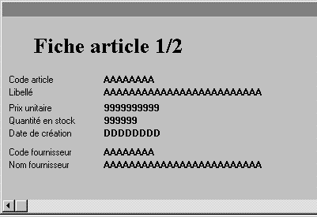
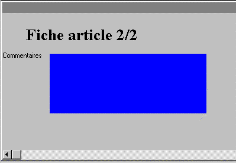

Lorsqu'un seul écran suffit à contenir la totalité d'un masque, on dit que ce masque est mono-écran. C'est le cas le plus courant. Mais si le masque est trop important pour "tenir" sur un seul écran, Xwin permet de le découper en plusieurs parties : on dit alors que le masque est multi-écran. Dans ce cas, les touches Ctrl+Tab et Maj+Ctrl+tab permettront à l'utilisateur de passer à la page suivante et de revenir à la page précédente, la gestion de ces changements de page étant entièrement assurée par Ywpf.
Exemple
Supposons qu'un programme de l'application propose la saisie d'une fiche article, contenant un numéro d'article, un libellé, un prix unitaire, une quantité en stock, une date de création, un code et un nom de fournisseur, ainsi qu'un texte libre de commentaire. Si le commentaire est prévu suffisamment large, cette fiche article peut nécessiter deux écrans, donc deux pages de masque :
Ecran 1 
Ecran 2

Remarque
Les différentes pages d'un masque multi-écran peuvent être "liées" entre elles par des onglets. L'utilisateur voit alors clairement que le masque comporte plusieurs pages et quelle est la page qui contient les données qui l'intéressent.